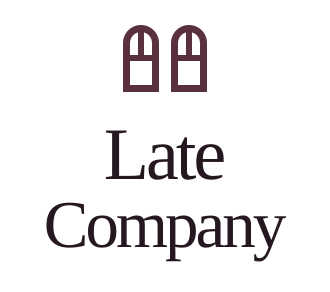
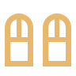
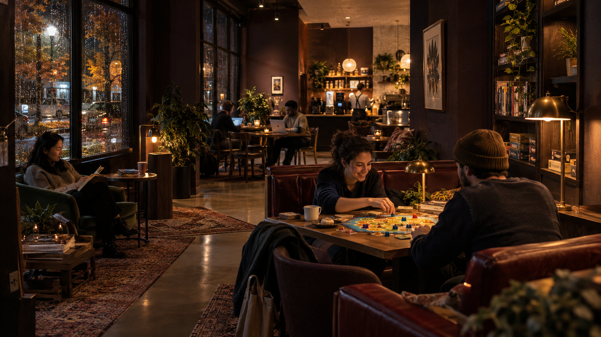
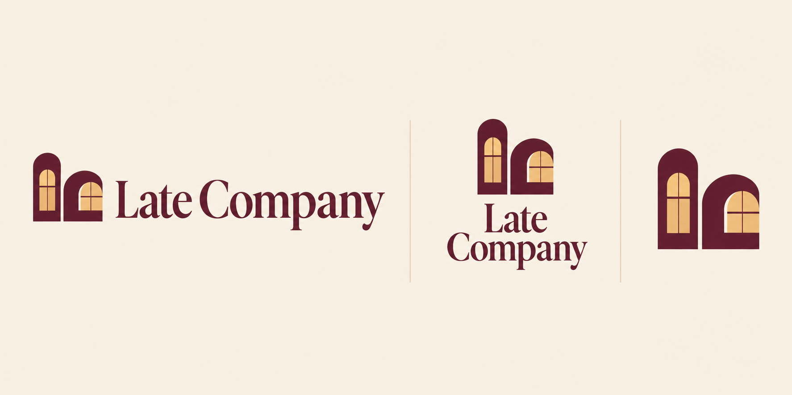

Late Company, working identity
A light on.
A place for you.
Warm rooms, easy conversation, and a night that runs on your time. The identity starts with two windows and the welcome of a light left on.
The companion windows
Two lit windows suggest a shared room. The simple arch repeats across the mark and the image framing. The wordmark uses a familiar, warm serif alongside practical, clear supporting type.

Stacked, on oyster
The symbolKeep at least one window's width of space around the logo. Use the full wordmark at 160 pixels wide or larger, and the symbol at 24 pixels or larger. Preserve its proportions.
Warmth, with room to breathe.
The palette takes its cues from burgundy seating, a dark street outside, and the golden circle beneath a table lamp.
#251820#58313D#E9B86F#F4EBDD#C1AFAF#778678Oyster is the main text color on dark surfaces. Stone supports secondary copy. Lamplight belongs to the logo, a clear action, or a small detail. Moss is a supporting visual color.
A familiar voice.
Good company.
Even late.
Georgia for the wordmark and display type. Generous size, normal weight, and simple line breaks.
Bring a laptop. Bring a friend. Come on your own.
A local system sans serif for navigation, forms, and supporting copy. The site does not need external font requests.
The room we imagine.

Warm practical light, walnut, comfortable seating, and people doing different things in the same room. All imagery is an AI-generated design study. It does not show an existing Late Company venue.
Early visual exploration
This generated mood board helped explore the window motif and its applications. The editable SVG files below are the actual artwork used on this website.

Download the artwork
The kit includes light, dark, stacked, and single-color SVG logos, transparent PNG exports; the window symbol; a favicon; an editable social card; color tokens; and usage notes. SVG symbol artwork uses editable paths. Wordmarks retain live Georgia text.


Working name, early concept. Late Company has not been cleared for commercial use. A limited web screen surfaced an existing hospitality use outside the US and a play with the same name. Further checks are needed before finalizing the identity.
This package is for concept testing. Prices, hours, location, and opening date are not announced.